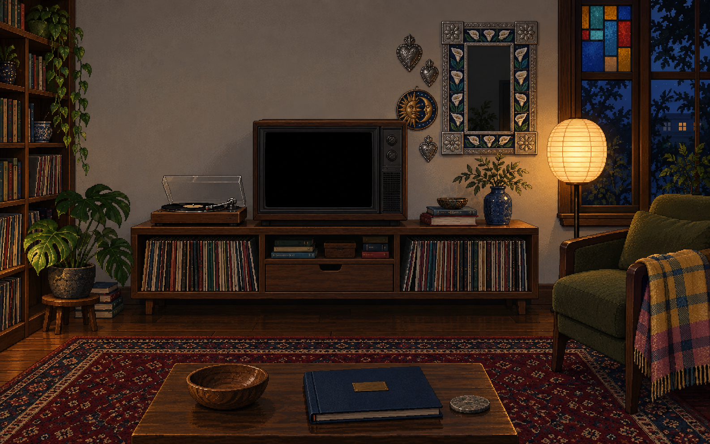
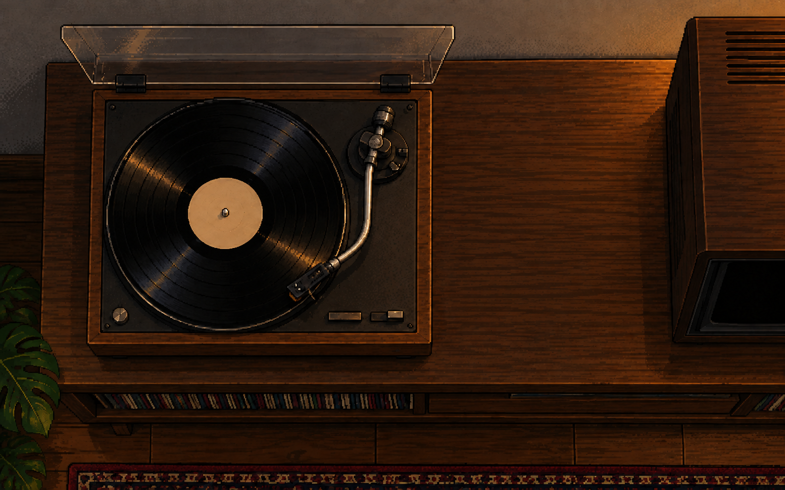

END OF CHAPTER
I’m a Mexican producer and editor working in film, television and advertising, in Spanish and English.
By day, I’m the Junior AI Filmmaker & Editor at Supergood. I also run Noche y Media Productions, creating space for stories that deserve to be seen, heard, and felt.
Born in Mexico City and raised between Miami and Mexico, I move between independent film, branded content and live television. I learned on the floors of Telemundo 52 in Los Angeles and TVI in Santiago.
I produced Si Solamente, winner of Best Picture at BU’s Redstone Film Festival, and represented Pajuyuk at its U.S. premiere at True/False.
Have a film, a question, a story in mind?

NOCHE Y MEDIA / ON THE TURNTABLE
Sound is off.
Choose a piece to hear it now. Back in the room, it plays from the beginning once, then the regular rotation returns.